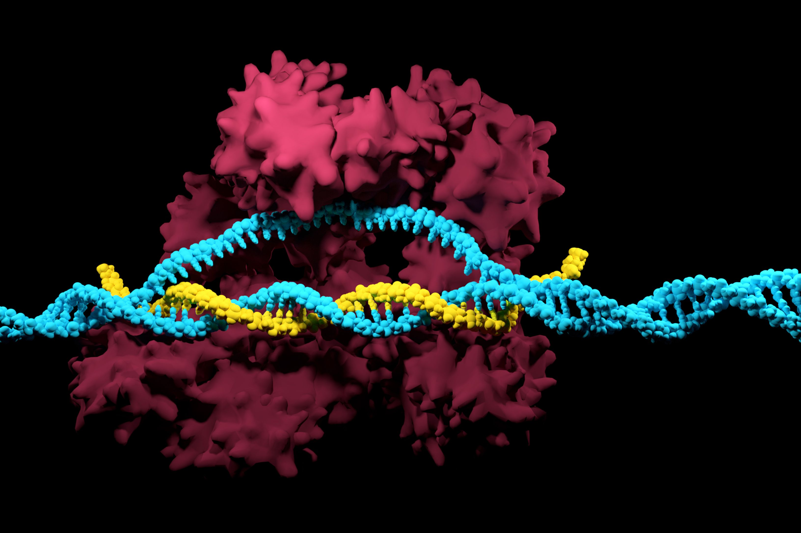

CRISPR-Cas9
CRISPR-Cas9 is a revolutionary gene-editing technology that allows scientists to precisely alter DNA sequences within living cells. It was adapted from a naturally occurring genome editing system in bacteria.
CRISPR-Cas9 mechanism
Developed in the early 2010s, CRISPR-Cas9 has quickly become a fundamental tool in biological research and has the potential to revolutionize medicine by offering new ways to treat genetic disorders and diseases.